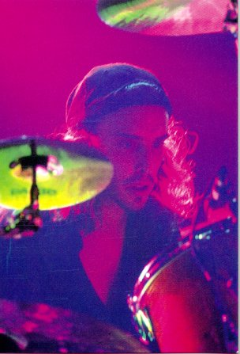
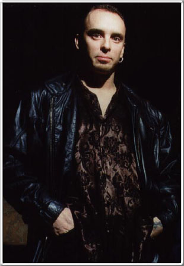
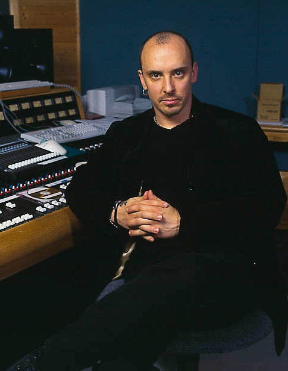

| Scott was born in Seattle, WA on June 15th
1963 and he has lived in the Seattle area ever since. It
was during the sixth grade that he attended a drum and
percussion seminar and, from that day forward, his
destiny became obvious. Soon after the seminar, he
acquired his first snare drum and played it at every
opportunity. Lessons didn't interest him so Scott decided
to follow what his heart told him and just played what he
wanted to hear. However, he's not saying that taking
lessons is wrong, it just wasn't something he felt
comfortable with. He's always had a hard time being told
what to do! Scott continued playing that same snare drum until he turned 14. At that time, he received what was to become the most important Christmas gift that he would ever get... his first drum kit! From then on, Scott was obsessed with drumming and would spend as much time as possible playing his drums and dreaming about making music. |
 |
 |
After his graduation from high school in 1981, an urge overtook Scott and playing drums in a rock band was all he could think about. That same year, with some friends and classmates, Scott helped to found "Queensryche." With money saved from working part time jobs, they booked time in a studio and made their first record, a self-titled EP that they released on their own label, 206 Records. The response from the public was overwhelming and soon they had a bidding war between seven major labels! The band decided to sign with EMI America and since then, have released seven full length recordings, including the cult classic "Operation: Mindcrime," and the mega-hit "Empire." The group has been honored with several gold and platinum albums, Grammy nominations, and many other awards throughout the years. A real high point was receiving the MTV Viewers Choice Award in 1991. After the demise of EMI America in the late 1990's, Queensryche signed with Atlantic Records and released the album "Q2K," in the fall of 1999. |
| Scott has always been a fan of progressive
instrumental music and was intrigued with the work that
local Seattle musician Paul Speer was doing with David
Lanz. They had done some really great videos to
accompany their albums and writing music for film and
video had been a strong interest of his for a long time.
So when Tom Hall (a mutual friend and
engineer on many Queensryche records) introduced
them in 1993, they discovered lots of common ground and
it turned out Paul was a big Queensryche fan as
well. Paul and Scott began exploring musical ideas and soon hooked up with director Mike Boydstun on the TeleVoid music video and album. Scott was finally able to flex his muscles as a soundtrack composer and they were rewarded with a Grammy nomination for TeleVoid in Long Form Music Video. Their second project as Rockenfield/Speer is an impressionistic journey into the deepest canyon in North America, Hells Canyon of Idaho. Expanding their musical and creative boundaries is what the work Scott does with Paul is all about and he looks forward to the journeys ahead. In 1996, on the personal side of things, Scott's life was blessed with the marriage to his best friend, Misty. And now, with three beautiful children, Scott has found a whole new form of inspiration. Love is a truly wonderful thing!!! |
 |